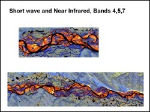
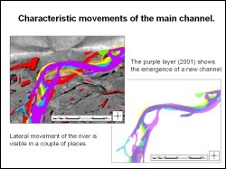
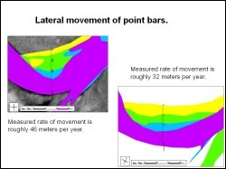

 The Colville River is located north of the Brooks Range in Alaska and empties into the Artic Ocean. The study area for this study was centered near the town of Umiat at latitude 69° 22' north and longitude 152° 10' west. This study focused on applying multitemporal remote sensing data to monitor the change of a selected area of the Colville River over time. The utilization of remote sensing data from various satellite sensors (Landsat MSS, TM and ETM; ERS SAR; Radarsat) over the past ten years provided the necessary temporal coverage to track the movement of the river. The only non-satellite data set that was used for this project was extracted from the USGS 1:63,360 maps of the Umiat quadrangle.
 Change is often a difficult feature to try to display visually. Experimentation with different methods of presenting the data was helpful in determining which ones would present the data in a meaningful way. Finally, remote sensing images were processed in Erdas Imagine and the overlay operations were carried out in ArcGIS. The final interpretation and analysis provided information that was quite useful for tracking the movement of the river. The spatial resolution was even good enough in two of the images to allow for a more detailed analysis of the characteristic movements of individual sand bars. The emergence of new channels could also be effectively mapped. Rates of lateral movement could be calculated as well as surface areas of erosion and deposition. For some sand bars, the lateral rate of movement was in the order of 30 to 40 meters per year.
 This study demonstrated that remote sensing data is very helpful in change detection analysis, and with the availability of higher resolution imagery it will be even more effective.